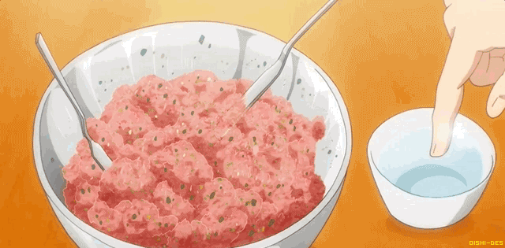

Gyoza Recipe

Best dang gyoza you'll ever put in your mouth!
There's nothing worse than a soggy gyoza. I mean, what's the point of them being called pot stickers when the bottom never stuck? I like me some cwispy and moist gyoza and in this recipe I'll show you how to do it!
What you'll need:
For the Dumplings
- 1 tsp black pepper
- 4 Tbsp of diced garlic
- 2 Tbsp ginger paste
- 1/2 tsp salt
- 1lb ground pork (preferably not lean)
- 1 tsp sesame oil
- 1 1/2 Tbsp soy sauce
- 1 1/2 tsp magic sarap (or dashi powder)
- 2 tsp sugar
- 1 Tbsp cornstarch
- 1 package dumpling wrappers
For the Dipping Sauce
- 1 Tbsp soy sauce
- 2 Tbsp white vinegar
- 1 tsp sesame seeds
Lets Get Started!
- Separate the white and green part of napa cabbage leaves. Finely dice the white "stems" and finely chop the leaves, keeping them separate.
- In a large skillet over medium heat, add a tablespoon of oil as well as your garlic,ginger, and black pepper. Saute until aromatic; about 2 minutes.
- Add napa cabbage stems only and turn the heat up to medium high. Add 1/4 tsp of the salt and cook until soft and translucent; about 4-5 minutes
- Add the cabbage leaves and cook for another 2-3 minutes until wilted and there's no pooling liquid. Remove from heat and spread it all out on a plate to cool quickly.
- While the cabbage cools, combine pork, the remaining 1/4 tsp salt, soy sauce, magic sarap, sesame oil, cornstarch, and sugar, and knead with your hands for at least 5 minutes. After kneading it should look smooth and pasty.
- Add the cooled cabbage and mix gently using a "fold and squish" action just until the vegetables are evenly distributed.
- Cook a little bit of the filling in the microwave to taste so you can adjust the seasoning if needed.
- Wrap the dumplings: Using a dessert spoon, scoop up a spoonful of filling (about 1 1/2 Tbsp) per piece. Writing a description of how to fold a dumpling is too hard to explain so just look that ish up on YouTube
- If you're not cooking them right away, freeze them immediately. Do not wrap and let them sit unfrozen for any longer than a couple of hours.
- Mix together the dipping sauce before you start cooking so it'll be ready.
Cook the Dumplings!
- In a nonstick skillet (or a well-seasoned cast-iron pa), add a little oil to thinly but thoroughly coat the bottom. Turn the heat on to medium high, and without waiting for the pan to get hot, go ahead and arrange the dumplings on the pan in a circular pattern. You can pack them pretty close together and fill the pan completely, but not so much that they are squished.
- Fry the dumplings for about 3-5 minutes or until the bottoms are well browned.
- Turn the heat down to medium and add about ¼ cup of water (it will splatter) and then close the pan with a tight fitting lid. Steam for about 3 minutes (5 mins if cooking from frozen) until cooked through. I like to use an "instant read" thermometer to check doneness, and I'm going for an internal temp of 160°F minimum.
- Once done, you can either use tongs to arrange them on a plate, OR if you're fancy, you can put a plate upside down on top of them pan and flip the whole pan onto the plate and serve the dumplings crispy side up. Just be quick and confident when you flip!
Bon Apetite! Hope you enjoyed this gyoza recipe!
